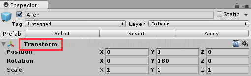
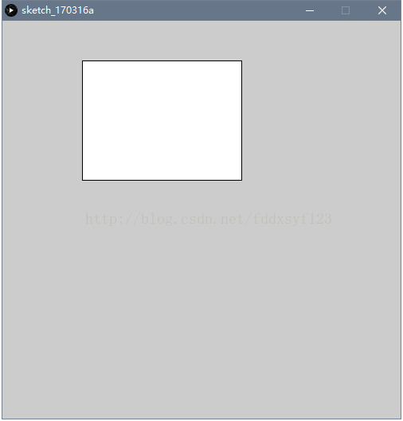
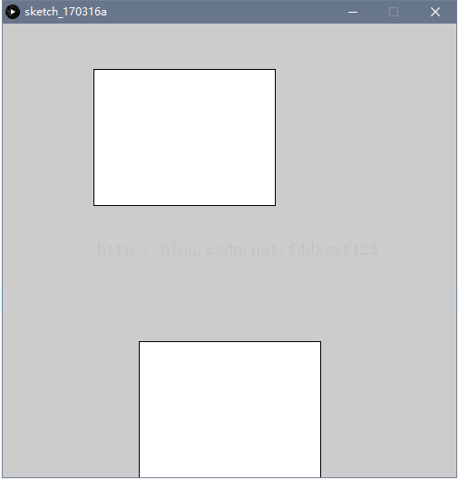
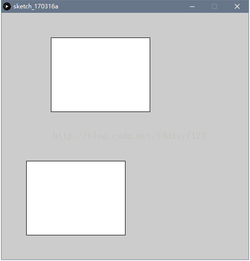
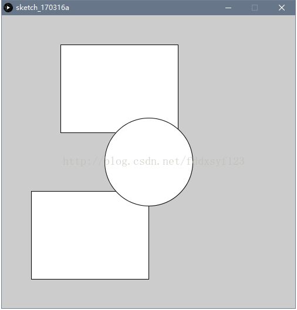

CSDN博客站点·同文地址: http://blog.csdn.net/fddxsyf123/article/details/62456299
介绍一下Processing控制图形的类游戏物件（gameobject的transform节点）的方法。【借Unity里的Transform component的概念进行类比学习】
大家熟悉Unity游戏引擎控制gameobject的transform节点，有三大属性可被控制，如图：

分别是Position,Rotation和Scale。（位置（偏移量），旋转值和缩放值）
有这样的component控制object就很得心印手。那倘若processing里也能有这样的节点控制该有多好！不要急，就给您讲~ 使用Processing里的translate(),rotate(),scale()函数就可以模拟上述的控制效果。我们可以从官方的文档里查看介绍。
https://processing.org/reference/translate_.html —translate()
https://processing.org/reference/rotate_.html —rotate()
https://processing.org/reference/scale_.html —scale()
打开Processing IDE ,比如想绘画一个矩形，置于画布（100,50）位置上，其他属性不变，键入如下代码：
1 | translate(100,50); |
注意rect()函数的参数填写。第一，第二个参数用来控制矩形绘制的起始点，这个例子里用了(0,0)点作为起始点，那为何画出来的效果是我们要的？答案就在translate()函数。这个函数可以重新定义所有绘画的起始点，也就是绘画的偏移量。假如再画一个方框，rect(50,50,100,100),那这个方框的起始点其实是在(150,100)点上，把translate()的偏移量叠加。
定义(0,0)点作为起始点再加上偏移量就可得到最终的(100,50)的位置。不用旋转，所以rotate()函数参数写0(括号里面因填写弧度制的值，因此用角度值开控制要加上radians(deg)函数)。缩放值也不用修改，1作为缩放量，即原有的大小。
如图：

如果再绘画第二个方框,位置设在(50,300)，键入
1 | translate(50,300); |
得到如图效果：

发现并不是理想的效果。原因在于translate偏移量会累加，绘画的总体起始点实际上从(0,0)变化到了(150,350)。从而画出的第二个方框的起始点实在(150,350)上。那如何处理呢？
可以在每次变化偏移量时，给一对出入堆栈的函数：pushMatrix() 和 popMatrix()。这一套函数可以使偏移的量或是其他量，相对独立开来，不影响上下的值大小，具体原理此处不去阐述。
So,我们在画每一个图形时加上这一对函数，即：
1 | pushMatrix(); |
得：

再如添加一个圆，放在中心，就可以这样编写：
1 | pushMatrix(); |
得到如图效果:

如果我们想在此基础上上图形产生偏移，就可在原本绘画函数参数里面进行变动，如rect()里定义的起始点，可以改成非(0,0)。但是不建议这样做。更有效控制的方法应该是再加入translate()命令来间接控制，比较妥当，便于往后繁多图形的控制。读者可以试修改rotate()和scale()里的参数看看效果如何。这样就可以模拟Unity里控制object的效果了。
下节补充介绍使用这种方法控制的益处和小案例。